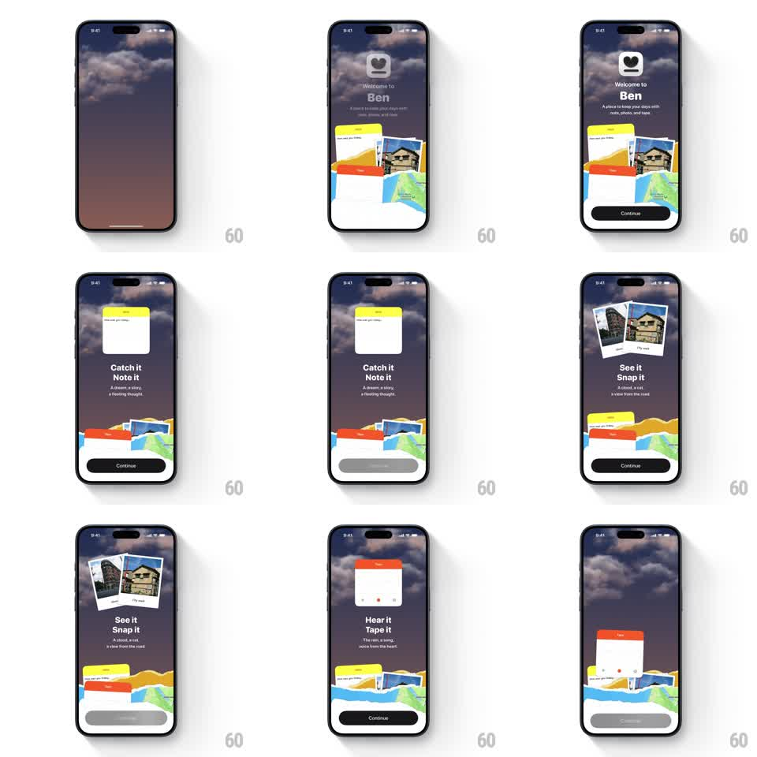

Media
Frame-by-frame

Rebuild this interaction 1:1: Ben Journal's onboarding pile - journal elements (photos, map scraps, note cards) bounce onto the screen with springy pops, and each Continue tap re-arranges the pile to feature the current step's card.

Rebuild this interaction 1:1: Ben Journal's onboarding pile - journal elements (photos, map scraps, note cards) bounce onto the screen with springy pops, and each Continue tap re-arranges the pile to feature the current step's card. ## Integration Integration: stack-agnostic spec - springs given as stiffness/damping, timed motions as duration + curve; map every value to your framework and animation library of choice. ## Scene Ben Journal onboarding over the cloudy sky: a collage pile of journal elements (yellow note, red tape card, polaroid photos, map scraps). Header zone carries the per-step copy: "Welcome to Ben" + tagline, then "Catch it Note it", "See it Snap it", "Hear it Tape it" - each with its own subtitle. A black Continue button sits below. ## Motion spec Pattern: springy element pile re-arranging per onboarding step. - Entrance: the sky fades in (500ms), then pile elements pop in from below-center one at a time - scale 0 -> 1 with spring ~420/15, rotation settling to each item's resting tilt (+/-6deg), 90ms apart, photos first then notes then scraps. - The Ben logo (rounded square with the heart) and "Welcome to Ben" block fade up together (300ms) after the pile lands; Continue slides up last (250ms). - Each Continue tap: the current headline slides up and out (250ms) as the next slides in from below; simultaneously the pile re-arranges - the step's featured card bounces to the front (scale 1 -> 1.12 -> 1, spring ~380/14, moving to center-front over 350ms) while the other elements shuffle back and re-tilt (300ms, 50ms stagger). - The step dots on the featured card advance with a fill wipe (150ms). - Final step's Continue keeps the pile and hands off to the next screen with a shared-element lift of the front card. ## Calibration - Elements never overlap the headline text - the pile owns the middle band only. - Every pop has a soft landing shadow that scales with the element. ## Reduced motion Elements fade in placed; step changes crossfade the featured card. ## Don't miss - The re-arrange on each tap is the point - the pile must visibly shuffle, not just swap a label. - The Continue button stays put through every step - only its enabled state changes.